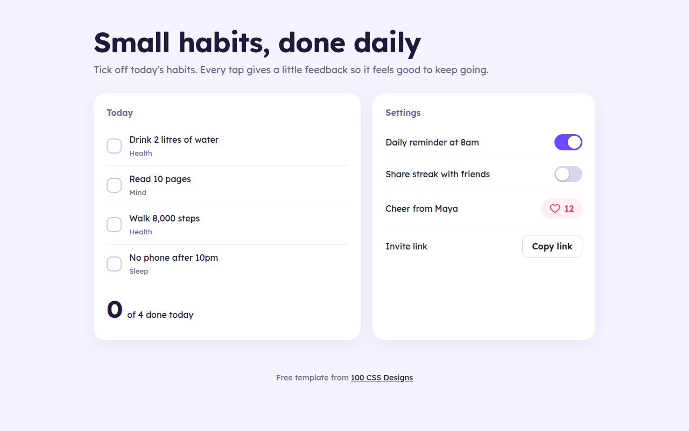
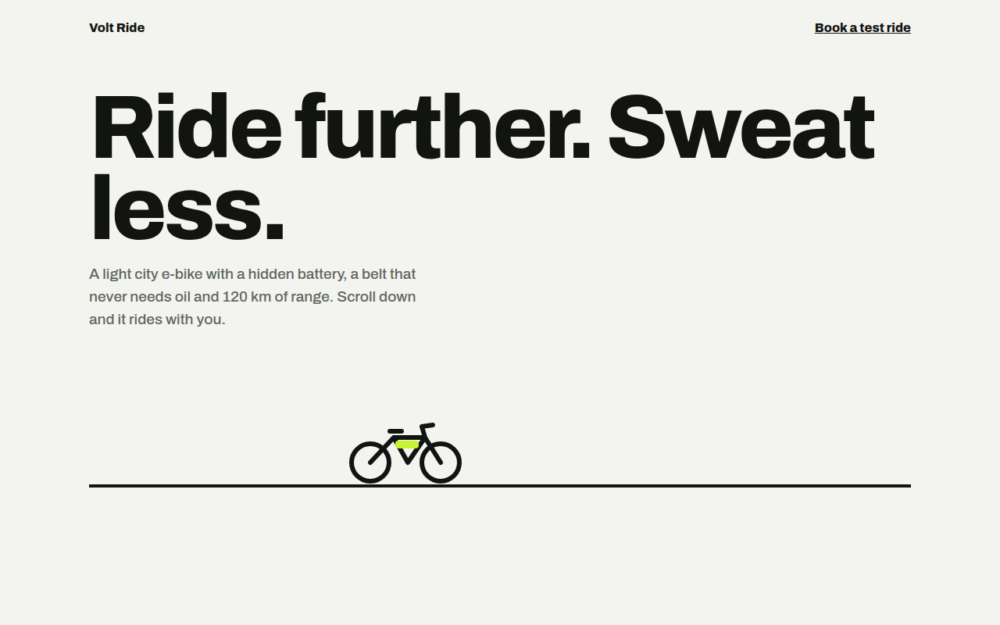
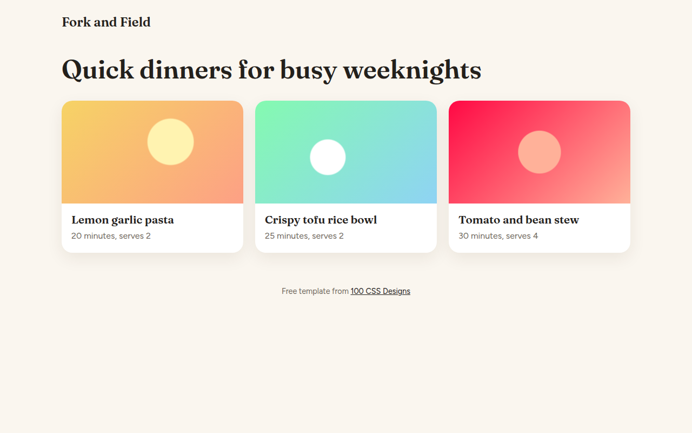
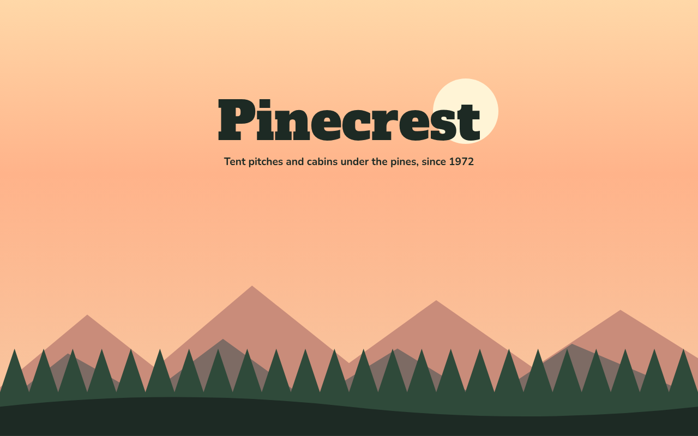
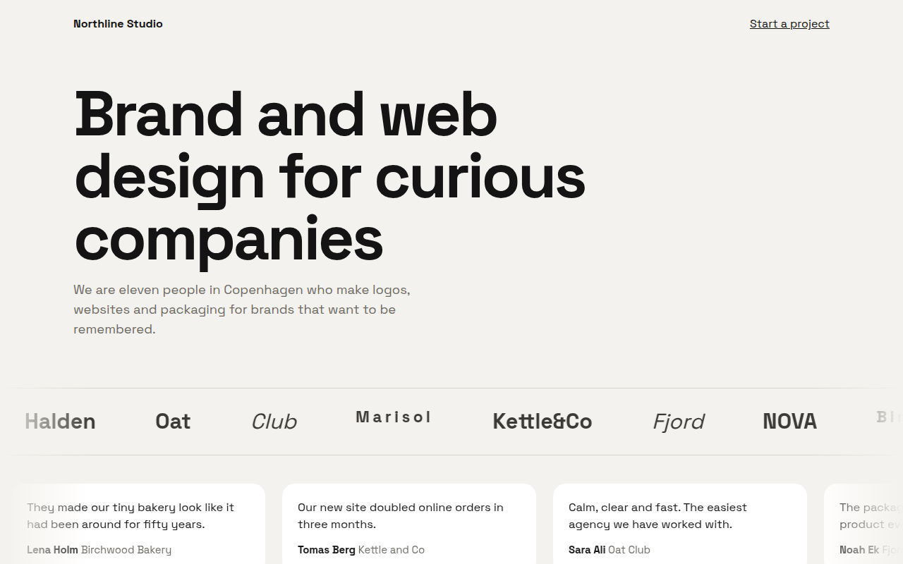
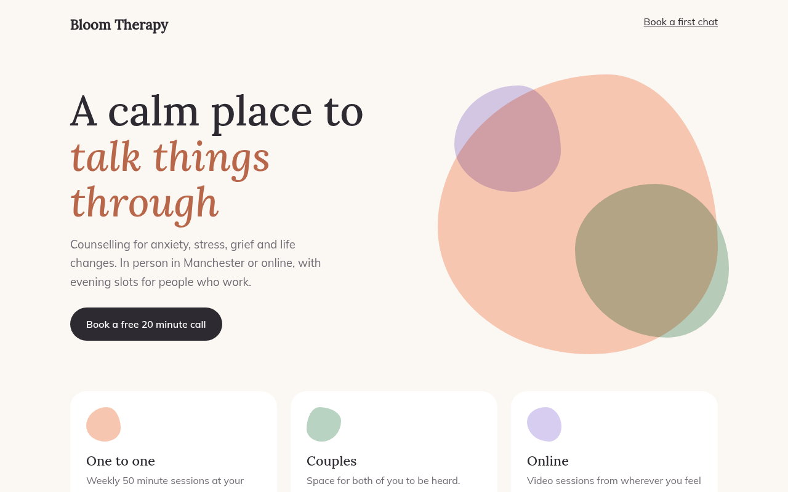
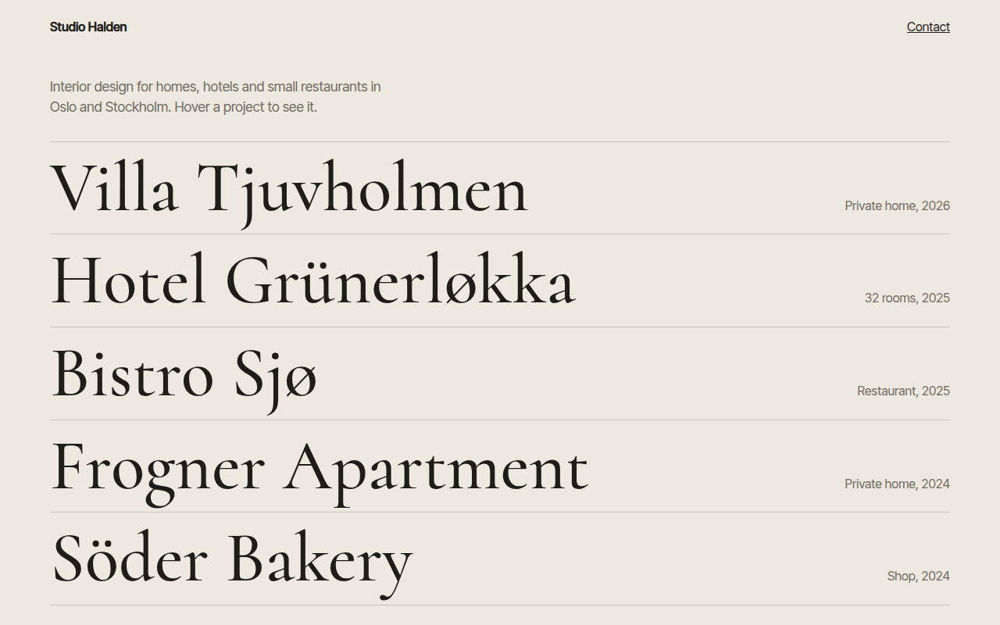
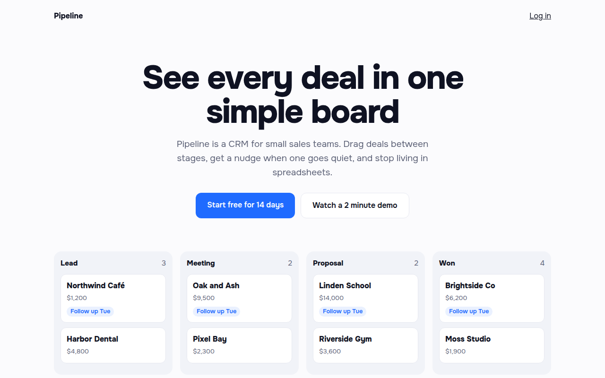
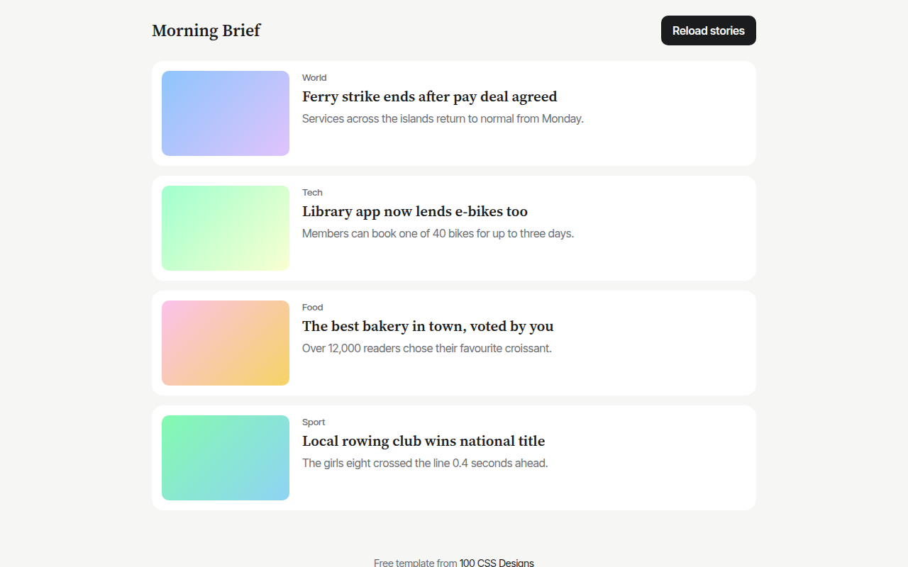
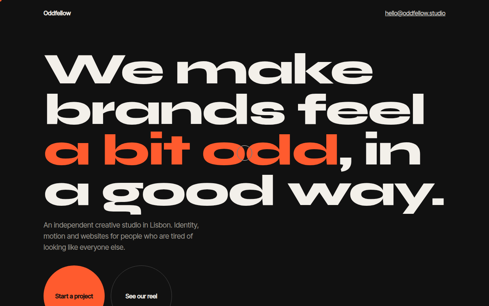

Home / Motion / Micro Interactions
Micro Interactions CSS Template, Free with Live Demo
Free micro interactions template for a habit tracker. Animated checkboxes, a like button that pops, a springy switch and copy feedback. Live demo. The example is Streak, a habit tracker.

What is micro interactions?
Micro interactions are the tiny moments of feedback when you tap something: a tick that draws itself, a heart that pops, a switch that springs across. They tell people their action worked and make an app feel alive.
Most of them here are pure CSS on real form controls, so they stay accessible. JavaScript only updates the numbers and the copy button text.
Good for
- Habit, task and fitness apps
- Settings screens
- Social features like likes and follows
- Share and copy buttons
What you get in this template
- Checkbox tick that draws with stroke-dashoffset
- Heart that fills and pops on like
- Toggle switch with a springy bounce
- Copy button that turns green and says Copied
- Counter that bumps when it changes
The key CSS
This is the part that makes the micro interactions look work. Copy it into your own project.
.box svg { stroke-dasharray: 20; stroke-dashoffset: 20; transition: stroke-dashoffset .25s; }
.hab input:checked + .box { background: #16a34a; transform: scale(1.08); }
.hab input:checked + .box svg { stroke-dashoffset: 0; }
.sw::after { transition: transform .25s cubic-bezier(.3, 1.5, .6, 1); }
.sw[aria-checked="true"]::after { transform: translateX(22px); }How to use it
- Click Download HTML file above.
- Open the file in any code editor, like VS Code.
- Change the text, colors and links to match your project. Colors are at the top of the style tag.
- Upload it to any host, such as GitHub Pages, Netlify or your own server. It is one file with no build step.
Questions people ask
What are micro interactions?
They are small animated responses to a user action, like a checkbox ticking, a button pressing in or a like icon filling.
How do I make a springy toggle switch?
Use a transition with a cubic-bezier that goes past 1, such as cubic-bezier(.3, 1.5, .6, 1). The knob slightly overshoots and settles.
Are custom checkboxes accessible?
Yes if you keep the real input. This template hides the input visually but keeps it in the page, so keyboards and screen readers still work.
More Motion designs

061. Scroll Driven Animation
Volt Ride, an e-bike product page
062. View Transitions
Fork and Field, a recipe site
064. Layered Parallax
Pinecrest, a campground
065. Marquee Ticker
Northline, a design studio
066. Morphing Blobs
Bloom, a therapy practice
067. Hover Reveal
Studio Halden, an interior design studio
068. Staggered Entrance
Pipeline, a CRM landing page
069. Skeleton Loaders
Morning Brief, a news app